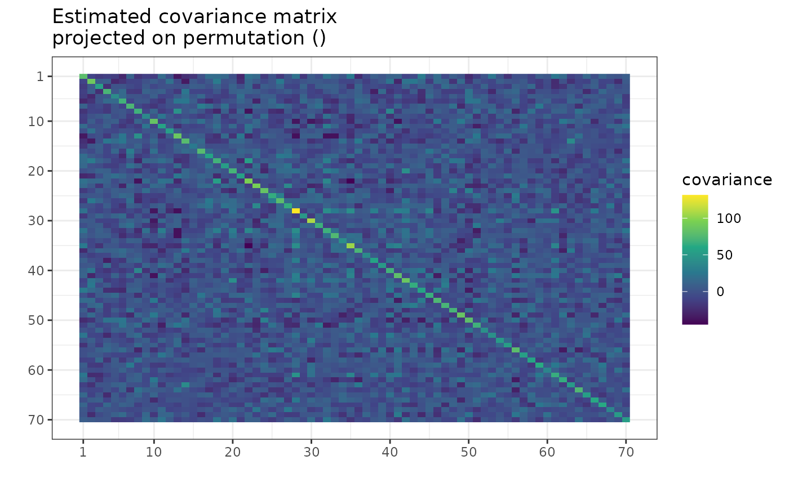
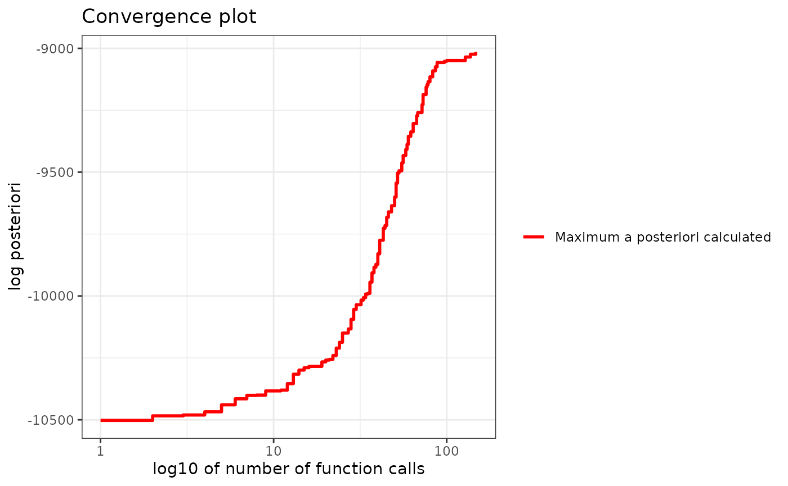
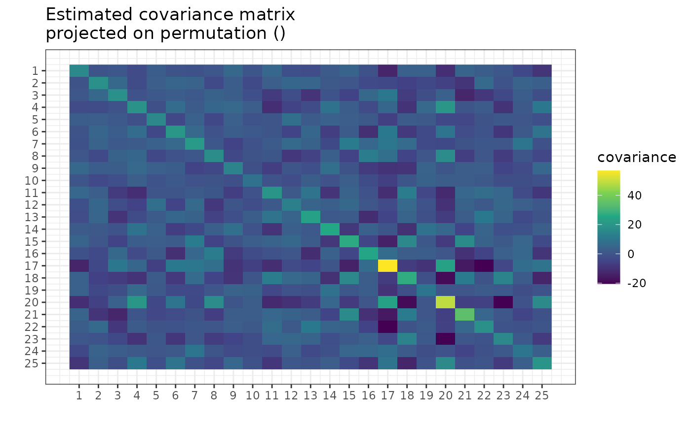
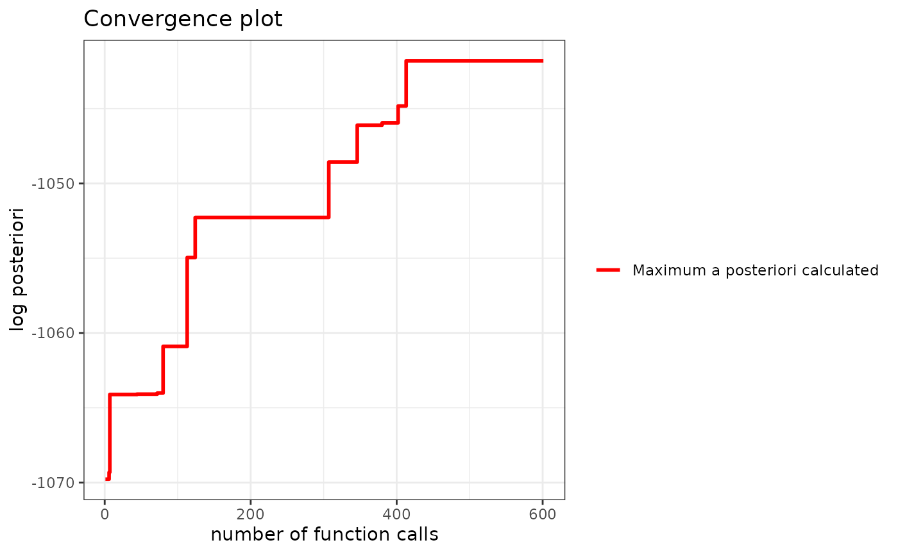
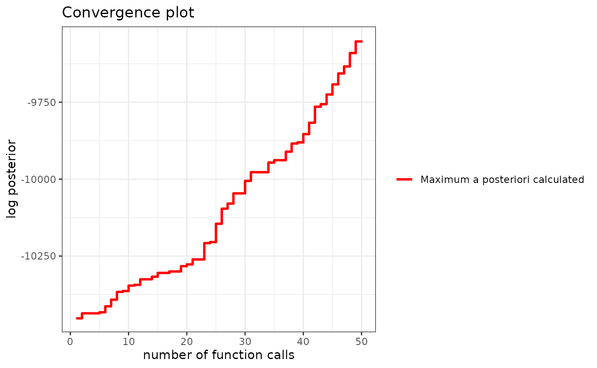
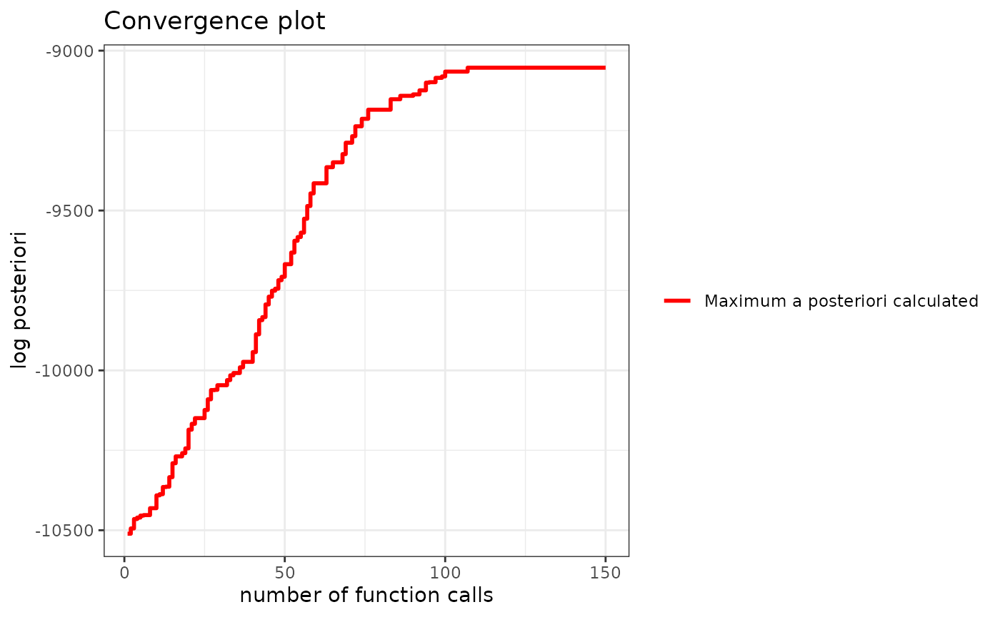

Available Optimizers: How to Find Maximum A Posteriori?
Source:vignettes/Optimizers.Rmd
Optimizers.Rmd
?find_MAP()What are we optimizing?
The goal of the find_MAP() is to find the permutation
\(\sigma\) that maximizes the a
posteriori probability (MAP - Maximum A Posteriori). Such a permutation
represents the most plausible symmetry given the data.
This a posteriori probability function is described in-depth in the
Bayesian model selection section of the
vignette("Theory", package="gips"), also available as a pkgdown
page. gips can calculate the logarithm of it by the
log_posteriori_of_gips() function. In the following
paragraphs, we will refer to this a posteriori probability function as
\(f(\sigma)\). We have \(f(\sigma) > 0\).
Available optimizers
The space of permutations is enormous - for the permutation of size
\(p\), the space of all permutations is
of size \(p!\) (\(p\) factorial). Even for \(p=12\), this space is practically
impossible to browse. This is why find_MAP() implements
multiple (3) optimizers to choose from:
-
"brute_force","BF","full"| recommended for \(p\le 10\). -
"Metropolis_Hastings","MH"| recommended for \(p\ge 11\). -
"hill_climbing","HC"
Note on computation time
The max_iter parameter works differently in
Metropolis-Hastings and hill climbing.
For Metropolis-Hastings, it computes the a posteriori probability for
max_iter permutations, whereas for hill climbing, it
computes \({p\choose 2} \cdot\)
max_iter of them.
In the case of the Brute Force optimizer, it computes all \(f(\sigma)\) values. The number of all different \(\sigma\) follows OEIS sequence A051625.
Brute Force
It searches through the whole space at once.
This is the only optimizer that will certainly find the true MAP estimator.
Brute Force is only recommended for small spaces (\(p \le 10\)). It can also browse bigger spaces, but the required time is probably too long.
The table below reports one measurement per dimension on an Apple M2,
using n_reps = 1 and n_cores = 1. Runs were
executed sequentially, each preceded by a BF warmup at \(p = 6\). The recorded optimizer times
exclude data generation and the warmup and are rounded for display.
| p=2 | p=3 | p=4 | p=5 | p=6 | p=7 | p=8 | p=9 | p=10 |
|---|---|---|---|---|---|---|---|---|
| 0.000676 sec | 0.00138 sec | 0.00394 sec | 0.0156 sec | 0.0887 sec | 0.522 sec | 3.86 sec | 31 sec | 5 min |
Example
Let’s say we have the data Z from the unknown
process:
dim(Z)
#> [1] 13 6
number_of_observations <- nrow(Z) # 13
perm_size <- ncol(Z) # 6
S <- cov(Z) # Assume we have to estimate the mean
g <- gips(S, number_of_observations)
g_map <- find_MAP(g, optimizer = "brute_force")
#> ================================================================================
g_map
#> The permutation (1,2,3,4,5,6):
#> - was found in a search using 362 posterior calculations;
#> - is 28979.967 times more likely than the () permutation.Brute Force needed 362 calculations, as predicted in OEIS sequence A051625 for \(p = 6\).
Metropolis-Hastings
This optimizer is based on the Second approach from [1, Sec 4.1.2].
It uses the Metropolis-Hastings algorithm to optimize the space; see Wikipedia. This algorithm used in this context is a special case of the Simulated Annealing the reader may be more familiar with; see Wikipedia.
The MH optimizer supplements ordinary Metropolis steps
with forced moves and temporary restrictions on reversing them to help
escape local optima. It searches for MAP; visit frequencies should not
be interpreted as posterior probabilities. See issue #115 for
details.
Short description
In an ordinary Metropolis step, the algorithm considers a permutation, say, \(\sigma_i\). Then a random transposition is drawn uniformly \(t_i = (j,k)\), and the value of \(f(\sigma_i \circ t_i)\) is computed.
- If a new value is bigger than the previous one (i.e., \(f(\sigma_i \circ t_i) \ge f(\sigma_i)\)), then we set \(\sigma_{i+1} = \sigma_i \circ t_i\).
- If a new value is smaller (\(f(\sigma_i \circ t_i) < f(\sigma_i)\)), then we will choose \(\sigma_{i+1} = \sigma_i \circ t_i\) with probability \(\frac{f(\sigma_i \circ t_i)}{f(\sigma_i)}\). Otherwise, we set \(\sigma_{i+1} = \sigma_i\) with complementary probability \(1 - \frac{f(\sigma_i \circ t_i)}{f(\sigma_i)}\).
The final value is the best \(\sigma\) ever computed.
Notes
This algorithm was tested in multiple settings and turned out to be a good optimizer for this problem. Especially given it does not need any hyperparameters tuned.
The only parameter it depends on is max_iter, which
determines the number of steps described above. One should choose this
number rationally. When set too small, there is a missed opportunity to
find a much better permutation. When set too big, there is a lost time
and computational power that does not lead to growth. We recommend
plotting the convergence plot with a logarithmic OX scale:
plot(g_map, type = "best", logarithmic_x = TRUE), then
decide if the line has flattened already. Keep in mind that the OY scale
is also logarithmic. For example, a marginal change on the OY scale
could mean \(10000\)
times the change in A Posteriori.
For more information about continuing the optimization, see the Continuing the optimization section below.
Example
Let’s say we have the data Z from the unknown
process:
dim(Z)
#> [1] 50 70
number_of_observations <- nrow(Z) # 50
perm_size <- ncol(Z) # 70
S <- cov(Z) # Assume we have to estimate the mean
g <- gips(S, number_of_observations)
suppressMessages( # message from ggplot2
plot(g, type = "heatmap") +
ggplot2::scale_x_continuous(breaks = c(1, 10, 20, 30, 40, 50, 60, 70)) +
ggplot2::scale_y_reverse(breaks = c(1, 10, 20, 30, 40, 50, 60, 70))
)
g_map <- withr::with_seed(2023,
code = find_MAP(g, max_iter = 150, optimizer = "Metropolis_Hastings")
)
#> ===============================================================================
g_map
#> The permutation (1,30,66,28,63,56,70,23,6,21,59,15,22,67,38,62,31,34,54,27,60,35,46,20,45,69,53,26,5,12,36,57,29,58,9,17,10,41,55,64,24,49,61,68,4,11,50,42,16,25,52,14,33,40,51,7,2,65,43,39,48,47,44,19,32,3,37):
#> - was found in a search using 149 posterior calculations;
#> - is 2.459e+659 times more likely than the () permutation.After 150 iterations, the best group found is unimaginably more
likely than the trivial group generated by the identity permutation
(): its posterior probability is approximately \(10^{659}\) times as large.
plot(g_map, type = "best", logarithmic_x = TRUE)
Hill climbing
It uses the Hill climbing algorithm to optimize the space; see Wikipedia.
It is performing the local optimization iteratively.
Short description
In every iteration \(i\), an algorithm considers a permutation; call it \(\sigma_i\). Then, all the values of \(f(\sigma_i \circ t)\) are computed for every possible transposition \(t = (j,k)\). Then the next \(\sigma_{i+1}\) will be the one with the biggest value:
\[\sigma_{i+1} = \operatorname*{arg\,max}_{\text{perm} \in \text{neighbors}(\sigma_{i})}\{f(\text{perm})\}\]
Where: \[\text{neighbors}(\sigma) = \{\sigma \circ (j,k) : 1 \le j < k \le \text{p}\}\]
The algorithm ends when all neighbors are less likely, or the
max_iter is achieved. In the first case, the algorithm will
finish at a local maximum, but there is no guarantee that this is also
the global maximum.
Example
Let’s say we have the data Z from the unknown
process:
dim(Z)
#> [1] 20 25
number_of_observations <- nrow(Z) # 20
perm_size <- ncol(Z) # 25
S <- cov(Z) # Assume we have to estimate the mean
g <- gips(S, number_of_observations)
plot(g, type = "heatmap")
# we will see a warning:
g_map <- find_MAP(g, max_iter = 2, optimizer = "hill_climbing")
#> ================================================================================
#> Warning: Hill Climbing algorithm did not converge in 2 iterations!
#> ℹ We recommend to run the `find_MAP(optimizer = 'continue')` on the acquired output.
#> Warning: The found permutation has n0 = 24, which is bigger than the number_of_observations = 20.
#> ℹ The covariance MLE is unavailable because the sample-size requirement is not met.
#> ℹ For a more in-depth explanation, see the 'Project Matrix - Equation (6)' section in the `vignette('Theory', package = 'gips')` or its pkgdown page: https://przechoj.github.io/gips/articles/Theory.html.
g_map
#> The permutation (1,13)(5,21):
#> - was found in a search using 601 posterior calculations;
#> - is 2.401e+21 times more likely than the () permutation.
plot(g_map, type = "best")
Continuing the optimization
When max_iter is reached during Metropolis-Hastings or
hill climbing, the optimization stops and returns the result. Plot the
best result found so far to assess whether it is still improving. A flat
segment does not guarantee that the global maximum has been reached.
Users can continue the optimization, as shown below.
g <- gips(S, number_of_observations)
g_map <- withr::with_seed(2023,
code = find_MAP(g, max_iter = 50, optimizer = "Metropolis_Hastings")
)
#> ==============================================================================
plot(g_map, type = "best")
We see the value is still increasing steadily. We now run 100 additional iterations and compare the best results before and after the continuation:
g_map2 <- withr::with_seed(2024,
code = find_MAP(g_map, max_iter = 100, optimizer = "continue")
)
#> ===============================================================================
plot(g_map2, type = "best")
log_gain <- compare_log_posteriories_of_perms(
g_map2, g_map, print_output = FALSE
)The posterior probability of the best group found after 150 iterations is approximately \(10^{265}\) times that of the best group found after 50 iterations. Keep in mind that the y scale is logarithmic, so a visually small increase can represent a large posterior ratio. Use the plot to decide whether the best result is stabilizing and whether to run further iterations.
Additional parameters
The find_MAP() function has three additional logical
parameters: show_progress_bar, save_all_perms,
and return_probabilities.
When show_progress_bar = TRUE, gips prints
“=” characters on the console during optimization. With
return_probabilities = TRUE, a second progress bar shows
probability calculation. For BF with \(p \le
10\), this bar tracks preparation of probability names from the
canonical group representatives.
The save_all_perms = TRUE will save all visited
permutations in the outputted object, which significantly increases the
required RAM. For instance, with \(p=150\) and max_iter = 150000,
we needed 400 MB to store it, whereas
save_all_perms = FALSE only required 2 MB. However,
save_all_perms = TRUE is necessary for
return_probabilities = TRUE or more complex path
analysis.
With return_probabilities = TRUE, probabilities are
calculated from unnormalized posterior weights \(w(\Gamma)\), conditional on the set \(V\) of distinct visited cyclic groups:
\[P(\Gamma \mid Z,\Gamma\in V)=\frac{w(\Gamma)}{\sum_{H\in V}w(H)}.\]
Each group contributes one weight, regardless of repeated visits or different generators. BF uses all cyclic groups and gives the full posterior. A high conditional probability after MH does not establish that all important groups were found.
get_probabilities_from_gips() only reads the stored
probabilities; saving permutations alone is not enough.
Probabilities after MH continuation or HC followed by MH use the
combined saved visited groups. Keep save_all_perms = TRUE
in every stage, and request probabilities in the final MH call:
g_small <- gips(diag(c(1, 1.4, 2)), 8, was_mean_estimated = FALSE)
g_hc <- find_MAP(g_small, optimizer = "HC", max_iter = Inf,
save_all_perms = TRUE, show_progress_bar = FALSE)
set.seed(1)
g_mh <- find_MAP(g_hc, optimizer = "MH", max_iter = 10,
save_all_perms = TRUE, return_probabilities = TRUE,
show_progress_bar = FALSE)
get_probabilities_from_gips(g_mh)
#> (1,2,3) (2,3) ()
#> 0.905590568 0.089759534 0.004649898Standalone HC does not support
return_probabilities = TRUE.
Discussion
We encourage everyone to discuss available and potential new optimizers on ISSUE#21. One can also see why some optimizers were implemented but not yet added to gips there.
References
[1] Piotr Graczyk, Hideyuki Ishi, Bartosz Kołodziejek, Hélène Massam. “Model selection in the space of Gaussian models invariant by symmetry.” The Annals of Statistics, 50(3) 1747-1774 June 2022. arXiv link; DOI: 10.1214/22-AOS2174
[2] “Learning Permutation Symmetry of a Gaussian Vector with gips in
R” by gips developers Adam Chojecki, Paweł Morgen, and
Bartosz Kołodziejek, Journal of Statistical
Software.